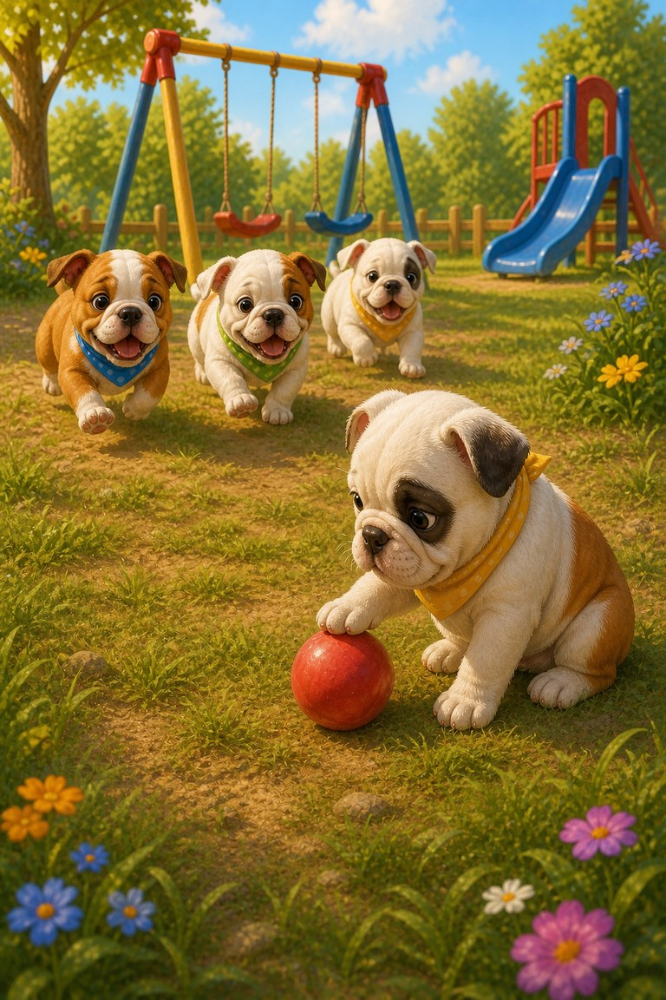
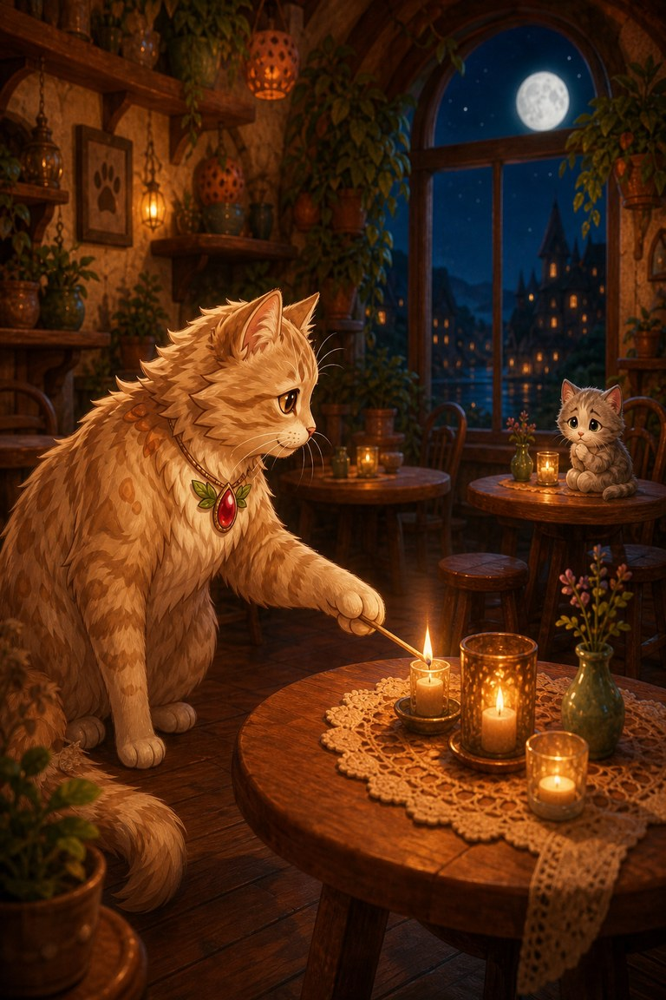

Open a story.
Stay for the adventure.
Free decodable readers and illustrated stories in phonics order, from the first sounds to vowel teams and word endings, plus number stories with a maths question on every page. Read them in your browser or print the PDF, with no account, ads or download.
Stage 1 · first sounds
Start here. Every word uses only s, a, t, p, i and n, plus a few tricky words to read together.


Stage 2 · six more sounds
Adds c, e, h, r, m and d. Ready when Stage 1 words feel easy.

Ten Red Hens
Ten hens, one net and a runaway chase — a short-E story a new reader can sound out alone.
Read the story
The Cat and the Rat
Every word is a plain three-sound word — the best book on the shelf for a first independent read.
Read the storyStage 3 · short o and u
Adds g, o, u, l, f and b, so every short vowel is covered.


Reading Trail · next steps
Six read-together stories that carry on after Stage 3: short-vowel review, sh/ch/th/wh, blends, magic e, vowel teams and word endings.

Ted-E-Bear’s Short-Vowel Kit
A warm den-building story full of short-vowel words for beginning readers.
Read the story
Hen-Berry’s Digraph Dash
Fog hides the path home. A shell, a fish and a few sh, ch, th and wh words lead the way.
Read the story
Stripe-Scout’s Blend Bridge
A branch blocks the bridge. A frog, a crab and plenty of blends help Stripe-Scout lift it.
Read the story
Sub-Zero’s Magic-E Lantern
A lost note, a runaway kite and a lantern made from tape, rope and a red cape.
Read the story
Meow-inara’s Vowel-Team Duet
The music never arrives, so Meow-inara listens, paints the beat and plays anyway.
Read the story
Quill-Berry’s Ending Clues
A poem has lost its endings. Quill-Berry adds -ing, -ed and -er and claps the beats.
Read the storyShort reads · four-page stories
Quick illustrated stories to read together, with a talk prompt on every page and a question at the end: friendship and kindness, adventures and mysteries, nature and the night sky.

Baby Bulldogs at the Playground
A quiet puppy, a red ball and a chalk-line game that lets everyone join in.
Read the story
Fe-Line-Mignon’s Moonlit Café
Every table is full, so the guests make one long table with room for a shy new kitten.
Read the story
Octo-Pop’s Ocean Adventure
A wave steals the welcome shell, and the shyest swimmer is the fastest to bring it back.
Read the story
Hen-Berry’s Helping Day
Hen-Berry’s basket breaks. Ted-E-Bear has advice; Wise Owl listens first.
Read the story
Stripe-Scout’s Trail Clues
A short muddy path or a long starry one? A clue helps Stripe-Scout choose.
Read the story
Lionnaise and the Dragon
A dragon blocks the bridge, and Lionnaise answers with an invitation instead of a roar.
Read the story
Polly Roger’s Pirate Cove
A chest full of gold, and Polly Roger spends it on the one thing the whole cove needs.
Read the story
Ham-and-Cheese’s Big Maze
Ham-and-Cheese could beat his fastest time, or help a lost mouse find the way out.
Read the story
Foxy-Lox’s Mystery Trail
A hoof print, a split crumb trail and a lost badge lead Foxy-Lox to the answer before the storm.
Read the story
Nutmeg’s Garden Morning
Nutmeg checks her seed before lunch, after lunch and every day until the seventh morning.
Read the story
Captain Beakon’s Star Watch
Clouds hide the sky, so Captain Beakon and Luckybug give it five patient minutes.
Read the story
Nutmeg’s Four Seasons
One acorn, four seasons and a friend for every one of them.
Read the storyNumber stories · maths on every page
Illustrated maths stories with a question on every page, from counting to negative numbers. Tap an answer to check it, or print the book and work on paper.

Ted-E-Bear and the Button Trail
Follow a missing-button mystery through counting, number order, comparisons and courage.
Read the story
Luckybug and the Market Morning Mix-Up
Berries roll, eggs run low and signs need string. Seven quick sums get the market open by noon.
Read the story
Biscuit-Bouncer and the Parcel Parade
The fastest route misses the quiet homes. Biscuit-Bouncer and Ginger-Deer find a better one, sum by sum.
Read the story
Hop-Tart and the Stepping-Stone Switch
A current twists the stepping stones. Hop-Tart builds a path that waits for Centi-Peed.
Read the story
Centi-Peed and the Below-Zero Burrow
Firefly footprints lead below zero. Centi-Peed and Sub-Zero count every step through the cold.
Read the storyOnly stories with complete, approved page artwork appear here. More will join the shelf as their illustration sets are finished.